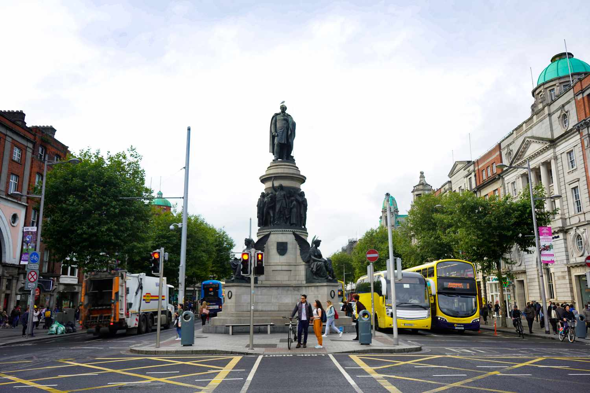
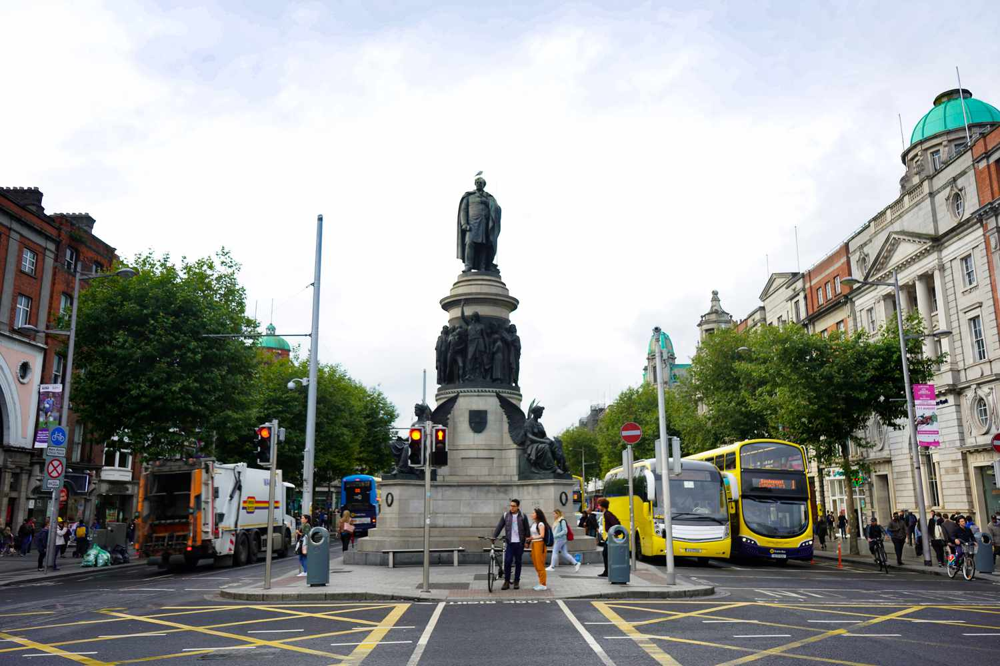
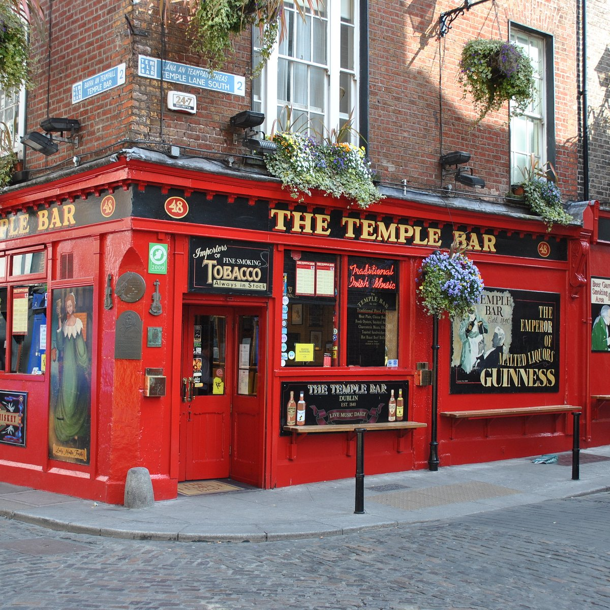
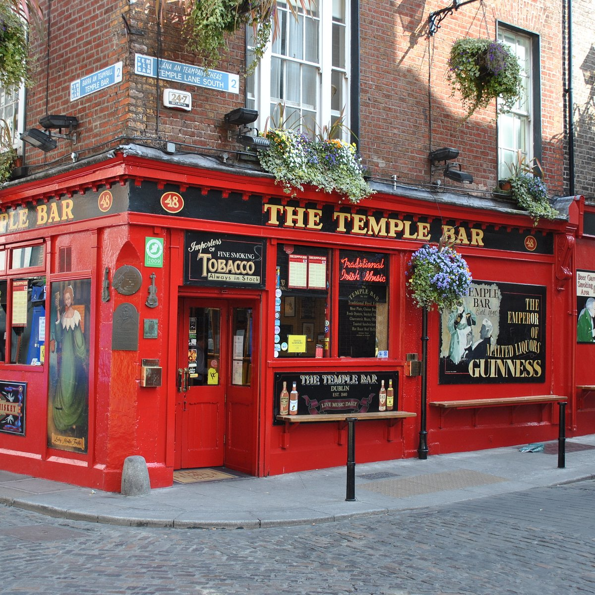
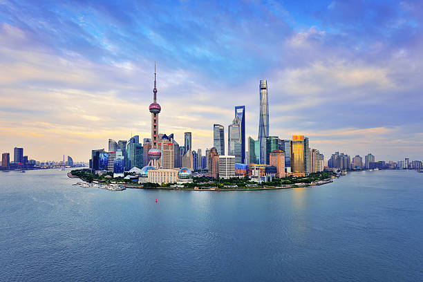

Jungfrau, Switzerland
A Mountainous City in Europe

Jungfrau is a city in Switzerland known for its mountain summits nicknamed the “top of Europe.” It is very famous also for its railway created in 1912 that can bring you to a height of 3454m. At the summit there are outstanding views where you can see the whole city and beyond.
The scenery consists of valleys, waterfalls, rock walls, and snow peaks. When visiting, it is vital to go on a day with good weather because it enhances the quality of the views. Hiking is very popular at short trails called Grutschalp and Murren. A very common tourist attraction is also exploring the Lauterbrunnen valley.
Photo Gallery


Dublin, Ireland
A City in Western Europe

Dublin City is the capital city of the Republic of Ireland and is located in the east of Ireland. Dublin was originally a Viking settlement called Dubh Linn which translates to black pool. Dublin has always been a historically significant city in Irish history, from being the main city from which the British ruled over Ireland for 800 years to then being the setting of the 1916 Easter Rising and Irish War of Independence.
Today Dublin is a developed city boasting one of the strongest tech sectors in Europe and a booming tourism industry. Dublin is renowned for its sites such as the GPO, Croke Park, O'Connell Street, Temple Bar and Saint James Gate, which is where Guinness is brewed. Dublin is also surrounded by great coastal towns such as Dun Laoghaire, Howth and Skerries.
Photo Gallery
 

 

Barcelona, Spain
A City in Western Europe

Barcelona is a wonderful destination in Spain with all the necessities for a perfect vacation. It has a population of roughly 1.6 million people and is located right on the beach of the Mediterranean Sea. It is a hub of Art and Architecture as well as technology and contains a vibrant culture.
There are many activities to do in Barcelona as well as things to see. One of the most popular activities is to visit Camp Nou and watch the amazing Barcelona FC soccer team play against various other teams in La Liga. There are also many architectural masterpieces designed by Antonio Gaudi to explore such as various Gaudi Houses and Parks and La Sagrada Familia, the largest unfinished catholic church in the world.
Photo Gallery


Shanghai, China
A City in East Asia
Shanghai, a vibrant metropolis, is nestled along the eastern coast of China. With a population of over 26 million, it ranks as one of the world's most populous cities and serves as a global financial hub. The cityscape of Shanghai is an exquisite blend of history and modernity, where towering skyscrapers such as the iconic Oriental Pearl Tower and the Shanghai Tower punctuate the skyline alongside historical landmarks like the Bund, a waterfront promenade that showcases colonial-era architecture.
The city has an unparalleled shopping scene that caters to all tastes, from luxury brands in shiny malls to hidden gems in busy markets. Moreover, Shanghai's culinary landscape is a testament to its multiculturalism, offering a symphony of flavors that range from traditional street food like xiaolongbao (soup dumplings) to avant-garde dining experiences.